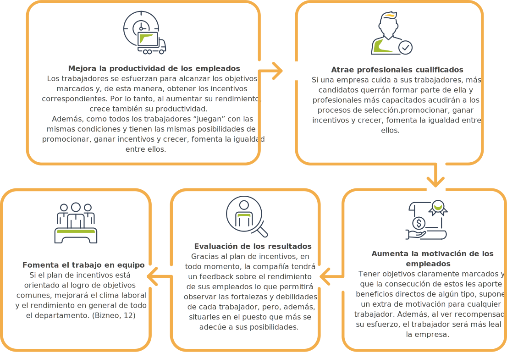

1. Resolución 5261 de 1994, Establece el Manual de Actividades, Intervenciones y Procedimientos del Plan Obligatorio de Salud en el Sistema General de Seguridad Social en Salud
LIBRO I. Manual de actividades, intervenciones y procedimientos
LIBRO II.
CAPITULO I. PLAN OBLIGATORIO DE SALUD, POS - NIVELES DE COMPLEJIDAD.

ARTICULO 91. Definición.
ARTICULO 92. De las responsabilidades.
ARTICULO 93. Remisión.
ARTICULO 94. Interconsulta.
ARTICULO 95. Asesoría.
TITULO I. DESARROLLO PLAN OBLIGATORIO DE SALUD, POS, PARA EL NIVEL I DE COMPLEJIDAD.
ARTICULO 96. POS, para el nivel i. de complejidad.
ARTICULO 97. Consulta médica general.
ARTICULO 98. Atención odontológica.
ARTICULO 99. Laboratorio clínico.
ARTICULO 100. Radiología. Imagenología.
ARTICULO 101. Medicamentos.
ARTICULO 102. Acciones intra y extramurales de promoción, prevención y control.
ARTICULO 103. Atención obstétrica.
ARTICULO 104: Atención no quirúrgica ni obstétrica.
TITULO II. DESARROLLO DEL PLAN OBLIGATORIO DE SALUD PARA EL NIVEL II DE COMPLEJIDAD.
ARTICULO 105. Atención ambulatoria especializada.
ARTICULO 106. Laboratorio clínico.
ARTICULO 107. Radiología.
ARTICULO 108. Otros medios diagnósticos.
ARTICULO 109. Otros procedimientos diagnósticos y/o terapéuticos.
TITULO III. DESARROLLO DE PLAN OBLIGATORIO DE SALUD PARA EL NIVEL III DE COMPLEJIDAD.
ARTICULO 110. condiciones de acceso a los servicios.
ARTICULO 111. consulta especializada (idem nivel II).
ARTICULO 112. laboratorio clínico.
ARTICULO 113. Radiología.
ARTICULO 114. exámenes especiales.
ARTICULO 115. otros procedimientos diagnósticos y/o terapéuticos.
ARTICULO 116. clasificación por niveles de complejidad medico quirúrgica.
TITULO IV. DESARROLLO DEL PLAN OBLIGATORIO DE SALUD PARA EL NIVEL IV. ATENCION DE PATOLOGÍAS DE TIPO CATASTRÓFICO.
ARTICULO 117. patologías de tipo catastrófico. (Ministerio de Salud , 1994)

Enlace de la normatividad
2. Resolución 537 de 2020 y sus anexos. Se modifica la resolución 3495 de 2019 clasificación única de procedimientos en salud-CUPS.
Resolución 3495 de 2019 Por la cual se establece la Clasificación Única de Procedimientos en Salud – CUPS. Corresponde al ordenamiento lógico y detallado de los procedimientos en salud que se realizan en el país, en cumplimiento de los principios de interoperabilidad y estandarización de datos utilizando para tal efecto la identificación por un código y una descripción validada por los expertos del país, independientemente de la profesión o disciplina del sector salud que los realice, así como del ámbito de realización de estos.
La Clasificación Única de Procedimientos en Salud - CUPS, se encuentra integrada por la lista tabular, los códigos especiales para reporte población indígena y los códigos para el reporte de otras prestaciones en salud, según los anexos técnicos que hacen parte integral del presente acto administrativo. (Ministerio de Salud y Protección Social, 2019)
Anexo técnico 1.

Manual de uso.
Glosario.
Lista tabular.
La Lista Tabular consta de cuatro secciones, identificadas de la siguiente manera:
Sección 00: Procedimientos quirúrgicos.
Sección 01: Procedimientos no quirúrgicos.
Sección 02: Procedimientos e intervenciones sobre la comunidad, su entorno y salud.
Estructura del código.
Convenciones usadas en la Lista Tabular.
Sección 03: Procedimientos quirúrgicos.
Sección 04: Procedimientos quirúrgicos.
Anexo técnico 2.
Lista tabular.
Anexo técnico 3.
Códigos especia/es para reporte población indígena.
Anexo técnico 4.
Códigos para e/ reporte de otras prestaciones en salud. (Ministeerio de Salud y proteccion social , 2019)
3. Resolución 1531 de 2014 modifica a la Resolución 3347 de 2000. Reglamentan los datos básicos que deben reportar los prestadores de servicios de salud y las entidades administradoras de planes de beneficios sobre los servicios de salud prestados.

Estimado aprendiz a continuación indagaremos todo lo relacionado a
Los datos del RIPS sirven para:
Formular políticas de salud.
Realizar la programación de oferta de servicios de salud.
Evaluar coberturas de servicios.
Asignar recursos financieros, humanos y técnicos.
Validar el pago de servicios de salud.
Fundamentar la definición de protocolos y estándares de manejo clínico.
Ajustar la Unidad de Pago por capitación.
Establecer mecanismos de regulación y uso de los servicios de salud.
Controlar el gasto en salud.
Ajustar los contenidos de los planes de beneficios en salud.
Conocer el perfil de morbilidad y mortalidad (Ministerio de Salud , 1994).
¿En qué varía el proceso de RIPS en las EAPB, con la entrada en vigencia de la resolución 1531 de 2014?
El proceso interno no cambia, solo que al final cuando generen sus archivos planos para el Ministerio de Salud, en lugar de enviarlos por medio magnético se envían por la plataforma PSIS, para este envío, se deben comprimir los archivos nombrándolo como aparece en el anexo de la resolución 1531, y cambiándole la extensión .zip o .rar por .dat y luego se procede al envío previa solicitud de usuario y clave por cada entidad. (Ministerio de Salud, s.f.)
Resolución 1531 de 2014
Enlace de Preguntas frecuentes RIPS
A continuación, encontrarás el Lineamiento Técnico para el registro y envío de los datos del Registro Individual de Prestaciones de Salud – RIPS, desde las Instituciones Prestadoras de Servicios de Salud a las EAPB. (Entidades Administradoras de Planes de Servicio).
Una vez apropiado los conceptos relacionados con los RIPS, en el siguiente enlace podrá visualizar el video tipo resumen acerca del tema.
Conceptos generales - Guía para el reporte de los RIPS
4. Terminología medicoquirúrgica.

Teniendo apropiados todos los conceptos de la normatividad, empezaremos a utilizar la terminología médica. Ya que en el entorno como apoyos administrativos en salud haremos uso de nuevo vocabulario en nuestras conversaciones y desempeño laboral. Es necesario que estudiemos y conozcamos este lenguaje. Por lo que es de suma importancia que usted aprenda los términos más comunes en cirugía y cómo se forman con base en prefijos, sufijos y raíces. A continuación, usted puede ingresar los siguientes enlaces para estudiarlos.
Daremos un recorrido por la anatomía humana. A continuación, puede visualizar los siguientes videos relacionados con:
Introducción a la anatomía humana
¡INTRODUCCIÓN A LA ANATOMÍA HUMANA! | TEMAS A TRATAR:
Definición y Clasificación de la Anatomía
Posición Anatómica de Referencia
Terminología anatómica resúmenes de anatomía y fisiología.
TERMINOLOGÍA ANATÓMICA | Resúmenes de Anatomía y Fisiología
5. Códigos CIE 10.
Los códigos CIE 10 son El Código Internacional de Enfermedades, elaborado por la Organización Mundial de la Salud - OMS, tiene como propósito permitir el registro sistemático, análisis, interpretación, y comparación de los datos de mortalidad y morbilidad recolectados en diferentes países o áreas, y en diferentes épocas (estrucplan, 2011)
Ventajas de usar una Clasificación Internacional de Enfermedades - CIE
Una clasificación de enfermedades convierte a los términos diagnósticos y otros problemas de salud de palabras a códigos alfanuméricos, que permite su fácil almacenamiento y posterior recuperación para el análisis de la información.
Las enfermedades se clasifican para facilitar el registro sistemático, la recopilación, el análisis, la interpretación y la comparación de datos uniformes de mortalidad y morbilidad recolectados en diferentes ciudades, países o épocas.
Estos datos son recopilados a partir de los registros diligenciados por el médico durante el proceso de atención, a través de los sistemas de información utilizados en el sector salud. Los datos incluyen enfermedades diagnosticadas, lesiones por causas externas y otros motivos de atención.
Estos datos, analizados apropiadamente, proporcionan información confiable a las autoridades sanitarias, que sirven para la toma de decisiones administrativas con datos estadísticos (Ministerio de Salud, 2015)
El cumplimiento de las Resoluciones 3374 de 2000 y 1895 de 2001 en Colombia, indica que todos los diagnósticos deben codificarse utilizando la CIE-10.
Enlace del manual
6. El sistema de incentivos como herramienta para el mejoramiento de la productividad empresarial
Incentivos laborales
Son aquellos estímulos que ofrecen las empresas con el propósito de incentivar a los trabajadores para que sean más competentes y generen mayor productividad a la institución a la que pertenece.
Existen dos tipos de incentivos laborales: económicos y no económicos.
Los incentivos laborales económicos
Es la remuneración monetaria que la institución otorga a su talento humano por el buen desempeño en las actividades asignadas, aumentando la productividad y la satisfacción de los usuarios. Algunos de estos incentivos económicos pueden ser el aumento de sueldo, etc.
Los incentivos laborales NO económicos
Cumplen las mismas funciones que el económico, pero en lugar de motivar al personal con dinero se hace con otros tipos de estímulos como: flexibilidad horaria, posibilidad de estudiar, etc.
Qué es un plan de incentivos laborales
Es un programa en el que se han estudiado y planificado cuáles son los incentivos idóneos según la empresa y el tipo de empleados, con el objetivo de motivar a sus trabajadores para que aumenten su producción y mejoren sus resultados laborales.
Es fundamental, además que este proyecto de incentivos sea entendible y que tanto los objetivos como los incentivos, sean medibles cuantitativamente. Por último, una vez fijado el plan de incentivos, la empresa debe evaluarlo periódicamente porque el entorno, los objetivos y las motivaciones de los empleados y de la compañía cambian y puede que haya que hacer ajustes cuando pase un tiempo. (Bizneo, s.f.)
Objetivos del plan de incentivos laborales
Motivar a los empleados.
Permitirles que crezcan profesionalmente.
Mejorar el clima laboral al marcar objetivos grupales por los que tendrán que trabajar en equipo.
Aumentar la productividad.
Fidelizar al trabajador para que no se vaya a otra empresa.
Atraer nuevos profesionales con talento.
Medir la productividad de la compañía, analizar los resultados y mejorar los procesos. (Bizneo, s.f.)
Ventajas de un plan de incentivos
Implementar un plan de incentivos en la empresa tiene muchos beneficios para los trabajadores, pero también para las compañías:
Los incentivos laborales para los trabajadores en una entrevista realizada por un noticiero a empresarios de la ciudad de chile.
Los incentivos laborales para los trabajadores | El mal momento que enfrenta el mercado laboral está lejos de ser una sorpresa.
En este video Incentivos laborales puede apreciar de una manera más dinámica una explicación sobre los incentivos laborales.
Incentivos laborales - Marilyn Arias | Created using PowToon -- Free sign up at http://www.powtoon.com/youtube/ -- Create animated videos and animated presentations for free. PowToon is a free tool that allows you to develop cool animated clips and animated presentations for your website, office meeting, sales pitch, nonprofit fundraiser, product launch, video resume, or anything else you could use an animated explainer video. PowToon's animation templates help you create animated presentations and animated explainer videos from scratch. Anyone can produce awesome animations quickly with PowToon, without the cost or hassle other professional animation services require.
7. Redes Integrales de prestadores de servicios de salud Lineamientos para el Proceso de Conformación, Organización, Gestión, Seguimiento y Evaluación.

A continuación realizaremos un recordéris de Las Redes Integrales de Prestadores de Servicios de Salud que se define como el conjunto articulado de prestadores de servicios de salud u organizaciones funcionales de servicios de salud, públicos y privados; ubicados en un ámbito territorial definido de acuerdo con las condiciones de operación del MIAS, con una organización funcional que comprende un componente primario y un componente complementario; bajo los principios de disponibilidad, aceptabilidad, accesibilidad y calidad al igual que los mecanismos requeridos para la operación y gestión de la prestación de servicios de salud, con el fin de garantizar el acceso y la atención oportuna, continua, integral, resolutiva a la población, contando con los recursos humanos, técnicos, financieros y físicos para garantizar la gestión adecuada de la atención, así como de los resultados en salud. (Ministerio de Salud, 2016)
En el siguiente documento Redes Integrales de prestadores de servicios de salud Lineamientos para el Proceso de Conformación, Organización, Gestión, Seguimiento y Evaluación encontrara temas relacionados con:
Capítulo 1
Redes integrales de prestadores de servicios de salud.
Capítulo 2
Conformación y organización de las redes integrales de prestadores de servicios de salud.
Capítulo 3
Habilitación de las redes integrales de prestadores de servicios de salud.
Capítulo 4
Seguimiento y evaluación de las redes integrales de prestadores de servicios de salud.
Capítulo 5
Alcances de la metodología desde las fuentes de información.
Enlace de la normatividad
8. Rutas Integrales de Atención en Salud – RIAS.
La fragmentación de los servicios de salud es una causa importante del bajo desempeño de los servicios de salud y por lo tanto del pobre rendimiento general de los sistemas de salud. Las dificultades de acceso a los servicios que enfrenta la población, los servicios de pobre calidad técnica, el uso irracional e ineficiente de los recursos, la baja satisfacción de los usuarios, son algunas de las consecuencias que genera la fragmentación por si misma o en conjunto con otros factores.
La iniciativa de OPS/OMS sobre sistemas integrados de servicios de salud, desarrollada en el marco de la renovación de la estrategia de Atención Primaria en Salud (APS) en las Américas, aborda el problema de la fragmentación de los servicios de salud y busca dar respuesta a la necesidad de avanzar hacia la producción y entrega de cuidados a la salud integrales para todos los habitantes de la Región, en cumplimiento, además, de diversos compromisos y mandatos internacionales.
Apoyar a los formuladores de política, a los gestores y a los prestadores de servicios de salud en el desarrollo e implementación de sistemas integrados de servicios de salud, es el objetivo de esta sección en la que se dispone no solo del documento base de la iniciativa, sino que además se podrán encontrar experiencias, instrumentos e información de apoyo en este proceso. (Organizacion Panamericana de la Salud , s.f.)
Las Rutas Integrales de Atención en Salud – RIAS—definen las condiciones necesarias para asegurar la integralidad en la atención por parte de los agentes del sistema de salud (territorio, asegurador, prestador) y de otros sectores.
El objetivo de las RIAS es garantizar la atención integral en salud a las personas, familias y comunidades a partir de intervenciones de valoración integral de la salud, detección temprana, protección específica, diagnóstico, tratamiento, rehabilitación, paliación y educación para la salud, teniendo en cuenta el mejoramiento de la calidad en todo el continuo de atención, el logro de los resultados esperados en salud, la seguridad y aumento de la satisfacción del usuario y la optimización del uso de los recursos. (Ministerio de Salud, s.f.)
Las RIAS están constituidas por tres tramos:
Ruta integral de atención para la promoción y mantenimiento de la salud.
Rutas integrales de atención para grupos de riesgo.
Rutas integrales de atención específica para eventos (Ministerio de Salud, s.f.)
Desarrollo de rutas integrales de atención en salud
Desarrollo de rutas integrales de atención en salud | Video ilustrativo modulo 3 Desarrollo de rutas integrales de atención en salud. Curso virtual RIAS
Enlace página del ministerio
Glosario
Atención en salud:conjunto de acciones que especifican un procedimiento de salud en el que intervienen recursos físicos, humanos o tecnológicos.
Autorización:corresponde al aval para la prestación de un servicio de salud por parte de una entidad responsable del pago a un usuario, en un prestador de servicios determinado. En el supuesto que la entidad responsable del pago no se haya pronunciado dentro de los términos definidos en la normatividad vigente, será suficiente soporte la copia de la solicitud enviada a la entidad responsable del pago, o a la dirección departamental o distrital de salud.
Consulta médica especializada:es aquella realizada por un médico especialista en alguna de las ramas de la medicina autorizadas para su ejercicio en Colombia, quien recibe al paciente por remisión de un médico general, o interconsulta especializada, o directamente en casos de urgencia por que la patología que presenta el paciente requiere evaluación especializada, internación o cirugía que el médico general no esté en condiciones de realizar. Una vez el paciente haya sido evaluado o tratado por el médico especialista continuará siendo manejado por el médico general remitente.
Consulta médica general o paramédica:es aquella realizada por un médico general o por personal paramédico y se considera como la puerta de entrada obligatoria del afiliado a los diferentes niveles de complejidad.
Copagos:los copagos son los aportes en dinero que corresponden a una parte del valor del servicio demandado y tienen como finalidad ayudar a financiar el sistema.
Cuotas moderadoras:Las cuotas moderadoras tienen por objeto regular la utilización del servicio de salud y estimular su buen uso, promoviendo en los afiliados la inscripción en los programas de atención integral desarrollados por las EPS.
Devolución:es una no conformidad que afecta en forma total la factura por Prestación de servicios de salud, encontrada por la entidad responsable del pago Durante la revisión preliminar y que impide dar por presentada la factura. Las Causales de devolución son taxativas y se refieren a falta de competencia para el pago, falta de autorización, falta de epicrisis, hoja de atención de urgencias u Odontograma, factura o documento equivalente que no cumple requisitos legales, servicio electivo no autorizado y servicio ya cancelado. La entidad responsable del pago al momento de la devolución debe informar todas las diferentes causales de esta.
Entidades promotoras de salud:explícitamente soportan a nivel técnico las actividades de conformación, organización y gestión de las redes.
Entidades territoriales:encargadas de la planificación y análisis de la prestación de los servicios de salud a la población teniendo en cuenta, la oferta disponible habilitada.
Glosa:es una no conformidad que afecta en forma parcial o total el valor de la Factura por prestación de servicios de salud, encontrada por la entidad responsable Del pago durante la revisión integral, que requiere ser resuelta por parte del Prestador de servicios de salud.
Incentivos laborales:son aquellos estímulos que ofrecen las empresas con el propósito de incentivar a los trabajadores para que sean trabajadores competentes y generen mayor productividad a la institución a la que pertenece.
Interconsulta:es la solicitud expedida por el profesional de la salud responsable de la atención de un paciente a otros profesionales del área, quienes emiten juicios, orientaciones y recomendaciones sobre la conducta a seguir en determinados pacientes, sin asumir la responsabilidad directa de tratantes, es decir, no hay en este aspecto transferencia.
Patologías de alto costo:son aquellas que representan una alta complejidad técnica en su manejo, alto costo, baja ocurrencia y bajo costo efectividad en su tratamiento.
Profesionales cualificados:la cualificación profesional describe un conjunto de competencias profesionales con significación en el empleo que pueden ser adquiridas mediante formación modular u otros tipos de formación, así como a través de la experiencia laboral (Ley Orgánica 5/2002, de 19 de junio, de las Cualificaciones y de la Formación Profesional).
Productividad:la productividad laboral es una medida de eficiencia de una persona, máquina, factoría, sistema, etc. en la conversión de los insumos en productos útiles.
Recibo de pago compartido:recibo de tiquete, bono o vale de pago de cuotas moderadoras o Copagos, pagado por el usuario a la entidad responsable del pago. No se requiere, cuando por Acuerdo entre las partes, el prestador de servicios haya efectuado el cobro de la cuota moderadora O copago y sólo se esté cobrando a la entidad responsable del pago, el valor a pagar por ella Descontado el valor cancelado por el usuario al prestador.
Remisión:es el procedimiento administrativo asistencial mediante el cual se transfiere el cuidado de un paciente de un profesional del área de la salud a otro profesional, un especialista o nivel superior de atención, con la consiguiente transferencia de responsabilidad por la salud del usuario.
Urgencia:es la alteración de la integridad física, funcional y/o psíquica por cualquier causa con diversos grados de severidad, que comprometen la vida o funcionalidad de la persona y que requiere de la protección inmediata de servicios de salud, a fin de conservar la vida y prevenir consecuencias críticas presentes o futuras.
RIAS:las Rutas Integrales de Atención en Salud – RIAS—definen las condiciones necesarias para asegurar la integralidad en la atención por parte de los agentes del Sistema de Salud (territorio, asegurador, prestador) y de otros sectores.
Sivigila:el Sistema Nacional de Vigilancia en Salud Pública – Sivigila (Decreto 3518 de 2006) del Instituto Nacional de Salud - INS provee información sobre eventos que afecten o puedan afectar la salud de la población, para orientar políticas en salud pública, la prevención y control de enfermedades y factores de riesgo, y el seguimiento y evaluación de las intervenciones.
Superintendencia Nacional de Salud:encargada de los procesos de verificación de las condiciones de permanencia de la habilitación de las redes integrales de prestadores de servicios de salud presentadas por las Entidades Promotoras de Salud.
Material complementario
| Nombre del documento o material. | Tipo de material. | Enlace del Recurso. |
|---|---|---|
| Resolución número 5261 DE 1994 Por la cual se establece el Manual de Actividades, Intervenciones y Procedimientos del Plan Obligatorio de Salud en el Sistema General de Seguridad Social en Salud. | Artículo | Descargar |
| Resolución 3374 de 2000. Cómo organizar e implementar los registros individuales de prestación de servicios de salud – RIPS. | Artículo | Descargar |
| Resolución 1531 de 2014. Por la cual se modifica la Resolución 3374 de 2000 en cuanto al mecanismo de transferencia de datos del Registro Individual de Prestación de Servicios de Salud - RIPS y su ámbito de aplicación. | Artículo | Descargar |
| Redes Integrales de prestadores de servicios de salud Lineamientos para el Proceso de Conformación, Organización, Gestión, Seguimiento y Evaluación. | Artículo | Descargar |
| Las Rutas Integrales de Atención en Salud – RIAS. | Página web | ver |
Referencias bibliográficas
Bizneo. (s.f.). bizneo.com. Cómo definir un plan de incentivos laborales: https://www.bizneo.com/blog/plan-de-incentivos-laborales/
Estrucplan. (22 de julio de 2011). estrucplan.com.ar. ¿Qué Es El CIE 10?: https://estrucplan.com.ar/que-es-el-cie10/
Mimnisterio de Salud. (2015). minsalud.gov.co. Clasificación Internacional de: https://www.minsalud.gov.co/sites/rid/Lists/BibliotecaDigital/RIDE/IA/SSA/cie10-cie11.pdf
Ministerio de Salud y proteccion social . (24 de diciembre de 2019). asesoriayserviciosayc.com. Resoluicion 3495 de 2019: https://asesoriayserviciosayc.com/wp-content/uploads/2020/01/CUPS-2020.pdf
Ministerio de Salud. (05 de agosto de 1994). minsalud.gov.co. RESOLUCION NUMERO 5261 DE 1994: https://www.minsalud.gov.co/Normatividad_Nuevo/RESOLUCI%C3%93N%205261%20DE%201994.pdf
Ministerio de Salud. (s.f.). minsalud.gov.co. Preguntas frecuentes RIPS: https://www.minsalud.gov.co/sites/rid/Lists/BibliotecaDigital/RIDE/DE/OT/FAQ-RIPS.pdf
Ministerio de Salud. (2016). minsalud.gov.co. Redes Integrales de prestadores de servicios de salud. Lineamientos para el Proceso de Conformación,Organización, Gestión, Seguimiento y Evaluación: https://www.minsalud.gov.co/sites/rid/Lists/BibliotecaDigital/RIDE/VS/PSA/Redes-Integrales-prestadores-servicios-salud.pdf
Ministerio de Salud. (s.f.). minsalud.gov.co. Rutas integrales de atención en salud - RIAS: https://www.minsalud.gov.co/salud/publica/ssr/Paginas/Rutas-integrales-de-atencion-en-salud-RIAS.aspx
Organización Panamericana de la Salud. (s.f.). paho.org. Redes Integradas de Servicios de Salud: https://www.paho.org/hq/index.php?option=com_content&view=article&id=4305:2008-redes-integradas-servicios-salud&Itemid=3553&lang=es
Fotografías y vectores tomados de https://www.shutterstock.com/ y https://www.freepik.es/
Licencia Creative Commons
CC BY-NC-SA
Ver licencia.